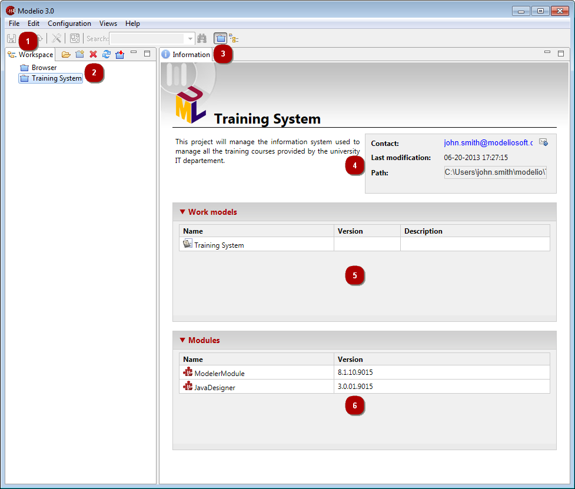

] icon to send an email to the project’s author.
] icon to send an email to the project’s author.
Key:
] icon to send an email to the project’s author.From the File menu:
Create a Project [ – Create a project… / Ctrl+N key] : Creates a new project.
Save current Project [ – Save project / Ctrl+S key] : Saves the current project.
– Save project / Ctrl+S key] : Saves the current project.
Close current Project [ – Close project] : Closes the current project.
Import a Project [ – Import project… / I key] : Imports a full project (*.zip) in the current workspace.
– Import project… / I key] : Imports a full project (*.zip) in the current workspace.
Switch workspace [ – Switch workspace…] : Switches to another workspace.
Close Modelio [ – Exit] : Closes and exits Modelio.
– Exit] : Closes and exits Modelio.
From the contextual menu:
Open a Project [ – Open Project / double-click / O key] : Opens an existing project.
– Open Project / double-click / O key] : Opens an existing project.
Close current Project [ – Close project] : Closes the current project.
Delete a Project [ – Delete Project / Del key] : Deletes an existing project.
– Delete Project / Del key] : Deletes an existing project.
Export a Project [ – Export project…/ X key] : Exports a full project into a zip archive.
Note: For more information, see “Creating a project”, “Opening a project” and “Configuring project information”.